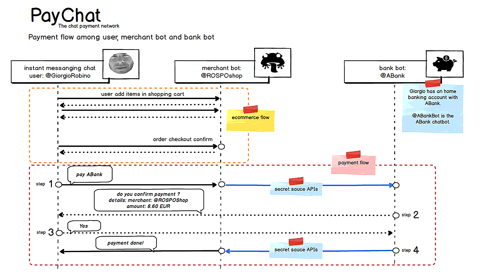

About PayChat: in-chat payment flow
Thanks Alessio for your notes!
I was unaware of https://www.w3.org/TR/payment-request/ and I’ll read this w3c proposal; thanks again.
- Payment Workflow: User — Merchant — Bank
What’s the reason behind having the merchant forwarding the request instead?
I know, this three actors handshake seems unusual, but in my opinion is fast and secure:
- User, during an online shopping checkout with the merchant chatbot, do not care about successive payments transaction details, but simply say:
pay smartbank
BTW, smartbank is a bank where user own an account (user@smartbank) and user associated one ore more chat apps account in the home banking settings.
- Merchant does the payment request , asking to the user bank with a backend protocol (https instant-payments API or in a future … a chatbot to chatbot transaction),
- Bank, after some verification (the user is really a customer of the bank, etc.) forward a confirmation back to the user and the user eventually confirm the payment.
This opens up to possibilities of a merchant showing a payment request to the customer and then submitting a different one to the payment provider imho
I see. I designed PayChat also for micro-payments (let say under 5$… and this is a possible killer application use case), and with an optional absence of confirmation (steps 4 and 5 in PayChat dotted lines in sequence diagram).
In this scenario (no confirmation) a merchant fraud is possible, I admit, but with the explicit confirmation instead, the fraud is a long shot, because is the user that accept the incoming request (from the bank)
In my opinion is very important to reduce the friction in the online chat payment flow. Some backend strategies have to be set-up to limit possible frauds (e.g. user could define thresholds values in the home banking, or maybe a list of trusted merchants, or user could claim an error in payment with an end-of -the day procedure, etc. etc., TBD).
2. User identifier
IBAN. Most of the world does not have IBAN. The proposal should be reworked to work with a generic set of payment credentials…
Yes, mentioning IBAN in sequence diagram is measliding, because that’s the bank account ID used in Italy (Europe), and of course any other unique user bank account ID fit well, but please note this ID is not really involved in sketched flow: in my view, merchant payment transaction refer to the user identifier inside the chat app, by example, in my case, my username in Telegram Messenger is @solyarisoftware, the identifier that user, as bank customer, stored in his home banking profile.
3. final price
There must be a mechanism for the user to feedback on the first PaymentRequest so that — if necessary — the total amount can be recalculated (e.g. import taxes, shipment fees, conversion rates if the customer decides to pay in a different currency, …). You can look at the PaymentRequest proposal for inspiration.
You are right. I assumed that the payment flow start when the final price is defined.
BTW, I think paypal is perfect for both
- standard physical goods online shopping from a remote merchant (involving shipment, taxes, currency calculations)
- but is perfect for “local trades” / proximity commerce, where, by example, users buy products and services from retailers / offline / in-stores.
See also a PayChat simplified sequence diagram at slide 36 here:

Please feel free to contact me also via email: giorgio.robino@gmail.com
Happy new year to you!
regards
Giorgio
Originally published on Medium.